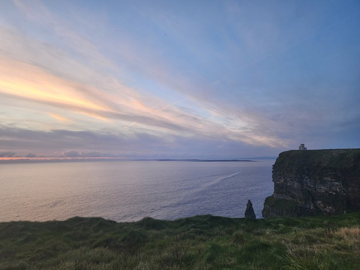
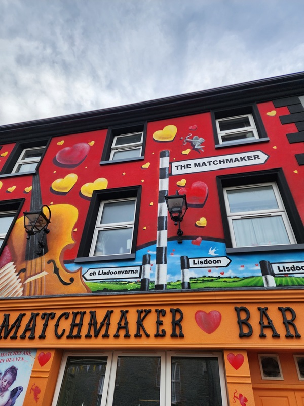
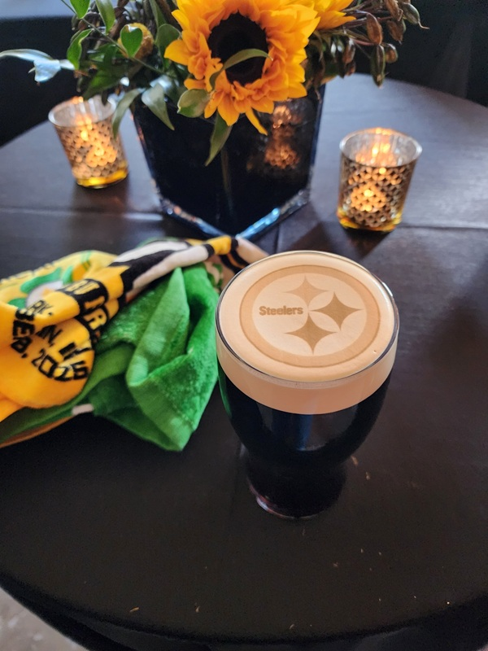
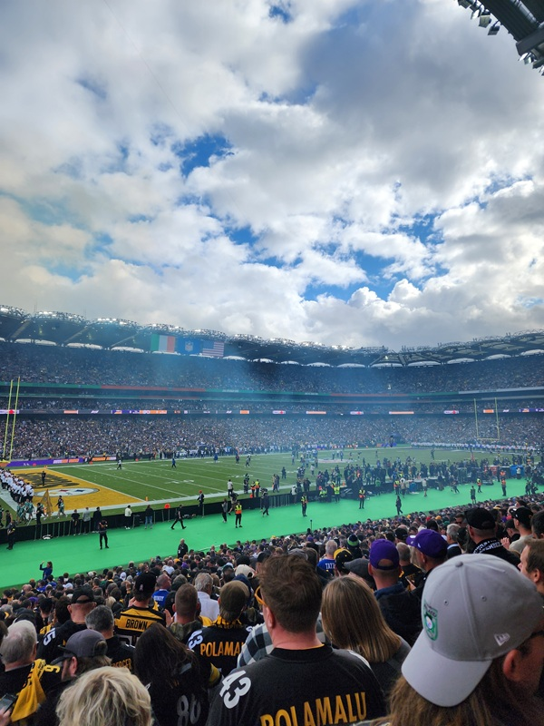
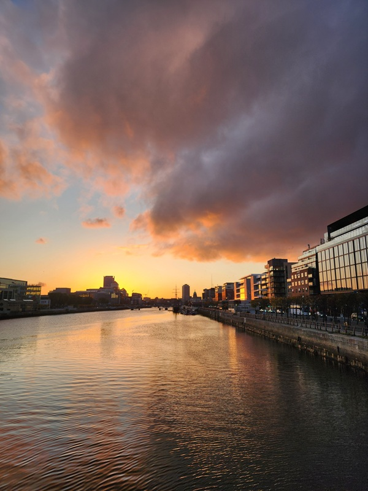

Cliffs of Moher
Ireland 2025
Purpose and Flight
In 2025, my friend and I went to Ireland. The main purpose of the trip was to see the Pittsburgh Steelers play the Minnesota Vikings. We left Pittsburgh international airport on an overnight flight heading to Dublin. Lots of blue, but we knew when we were over land again. The country scape looked like camaflauge from the sky. Once landed, the green didn't disappoint.
The Country Side
First things first we needed transportation. We got a rental car and headed out towards the west coast. One thing that has to be mentioned is that if you are accustomed to driving in America, driving in Ireland takes a little time to get used to. But we got past the scares of almost driving on the wrong side of the road, and started jumping from town to town, exploring some of Irelands oldest towns.
Lisdoonvarna Matchmaking Festival
One of the towns we visited was Lisdoonvarna. This town is known for its matchmaking festival that happens every September. The festival has been going on for over 150 years, and is a place where singles from all over Ireland come to find love. We happened to be there during the festival, and it was quite the experience. There were music, dancing, and plenty of opportunities to meet new people. While we didn't find love ourselves, it was fun to see the tradition in action.

Dublin and The Game
After all the exploring was complete, it was time to head back to Dublin for the week. What an awesome city and I was supprise how diverse and busy Dublin was. We stayed in the cities center area near Temple Bar, and got to experience the nightlife first hand. I will definitely be going back to Dublin!
One of the other cool factors of Dublin were just how many Steeler fans were in town for the game. It almost felt like we were taking over and also like wer were part of something bigger. Once game time came, I was also very supprise at how many Minnesota Vikings fans had shown up, because we didn't see that many the entire week prior. But boy was it a good game and the Steelers came out on top!


